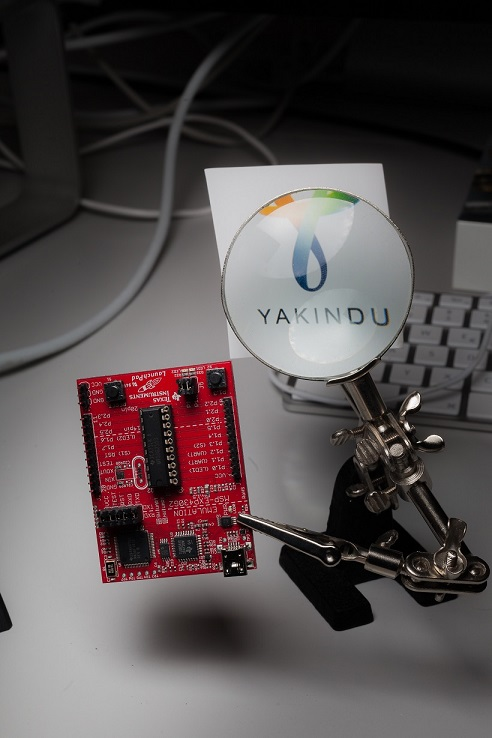
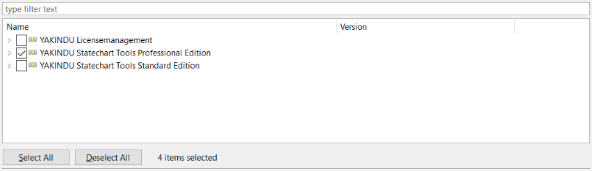
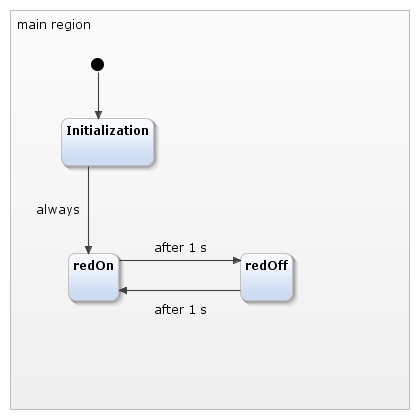

[Pro] MSP430 Blinky
Overview

This tutorial contains three parts:
1. Installing the YAKINDU Statechart Tool as a Plugin into Texas Instruments Code Composer Studio
2. Adding state machines to the project
3. Creating the Blinky example with the Professional Edition
The whole tutorial gives you step-by-step instructions to enable you to upload the project.
Installing the YAKINDU Statechart Tool as a Plugin into Texas Instruments Code Composer Studio
First, you need to install TIs Code Composer Studio, which you can find here:
Ensure you have at least chosen the MSP430 ultra-low power MCUs.
Open your CCS after installation. You can choose a test example of TI to ensure that you are connected to the launchpad and that you can compile and upload Code. After this little test, you can install the plugin. Therefore, open the Help tab and click on Install New Software...

There you can install Yakindu. You need two update sites for this.
First you need to add the update site of Eclipse Neon to allow Yakindu Statechart Tools to find Xtext plugins. Click on Add and paste to add Eclipse Neon to your repository. You do not need to install anything, the update site just needs to be set.

After this, you need to get the download site of YAKINDU Statechart Tools. Go to our download site and complete the free registration, in case you have not done this already. Then you will get a number of different installation options. Choose the black button with install from update site.

Once again, go over to install new software. There you add the URL you copied from our site. Choose at least the YAKINDU Statechart Tools Professional Edition. You will get a trial version, which lasts for 30 days. Don’t hesitate, our aren’t buying anything. If the time expired, you can still use all free Community Edition features.

Start the installation by clicking on Next and follow the instructions. The installation wizard asks if you really want to install the software. Click on Ok. After a successful installation CCS needs to be restarted. Afterwards, the installation is finished.
Working with YAKINDU Statecharts Tool in CCS
To use state machines proceed as normal and create a new CCS Project. Open
the File tab, open New, click on Other and search for
Code Composer Studio. There you can choose a CCS Project.
Define a project name, choose your microcontroller and create a empty
project, which contains an empty main.c file. I used the
MSP430G2553
.
Now you can start working with state machines!
Working with YAKINDU Statecharts Tool Professional Edition
Right click the project, open New and choose a C Statechart Model. A Wizard will be opened in which you can select your project and name your statechart. For example, call it “blinkyStateMachine.sct”.

The Statechart model will appear in the project folder after clicking on Finish. Click on Yes if you are asked to change the perspective.
Now you can import the header file to your state machine. Open the C
Statechart Model and add “
import: msp430g2553.h
”. This can also be done with code completion (STRG + Space). If
the file was not found, try to refresh and clean your project. Your
project should look like this, without any errors markers:

Quite easy: a blink example created with the Professional Edition
The goal is to create a project in which the red LED gets initialized and toggles every 1 second. Additionally the WDT is used for the state machine's clock.
To do so, rename the “StateA” to “Initialization” and add two new states named “redOn” and “redOff” to the main region. Add the “always” and the two “after 1 s” transitions, as shown in the picture.

Then you can easily copy the code here, or you enter it on your own. Once again the code completion can be used. See how you can simply use all the defines from the imported header files? This really simplifies everything.
Initialization: entry / WDTCTL = WDT_MDLY_32; IE1 |= WDTIE; P1DIR |= BIT0
redOn: entry / P1OUT |= BIT0
redOff: entry / P1OUT &= ~BIT0
Now the C Statechart Model is finished and should look like in this picture. After a rebuild a no error markers should appear.

Generate the C-Code
Now it is time to generate the C-Code. Therefore, a generator model (.sgen) must be added. Right click the project once again and open New and click on Code Generator Model. Choose a name for the sgen file. It is good practice to stay with the state machine name. Call it "blinkyStateMachine.sgen" for example and click on Next. Choose the desired state machine by clicking on the checkbox. Ensure that you have chosen the YAKINDU SCT C Code Generator and click on Finish.

Build the project. The folders src and src-gen should appear in your project. They include the generated C-Code, which will be automatically be updated when you edit and save the statechart.
Because this statechart uses time based events, a timer service needs to be implemented. To prepare this, you need these two files:
sc_timer_service.c
sc_timer_service.h
You can get them from GitHub, but they are already included in this example.
Your project folder now should look like this:

Change Compiler to C99
Now you need to set the compiler. Therefore, right click your Project and open the Properties view. Then go to Build -> Advanced Options -> Language Options and choose Compile program in ANSI C99 mode. (--c99) as the C Dialect.

Calling the State Machine from your code
Finally the state machine can be used in your main function. First you have to include the state machine and the timer service. Then the state machine, the timer service and the required functions for the timer service must be declared and defined. The main function contains two parts. The initialization and enter function of the state machine and the initialization of the timer. The second part is an endless loop - the while(1) loop. Within this loop the run cycle function of the state machine is called. Afterwards the MSP430 will be set into the Low Power Mode 0 and the General Interrupt Enable bit gets set. Now the microcontroller is sleeping and waits for an interrupt. After the interrupt of the WDT, the timer will proceed. This means that every timer gets updated and the elapsed time gets incremented by 32 - the time in milliseconds, which is proceed after every interrupt of the WDT.
The main.c file is included in the example.
That’s it - Now you can build and upload the program to your MSP430!
Hopefully this tutorial helped you to successfully create a project for your MSP430. Now it's time to implement your own ideas!
System and Version Information
The following tools were used in the creation of this tutorial:
System: Windows 10
YAKINDU Statechart Tool Version: 2.9.3
Code Composer Version: 7.0.0.00043
Note: The MSP430G2 Launchpad does not support Linux.